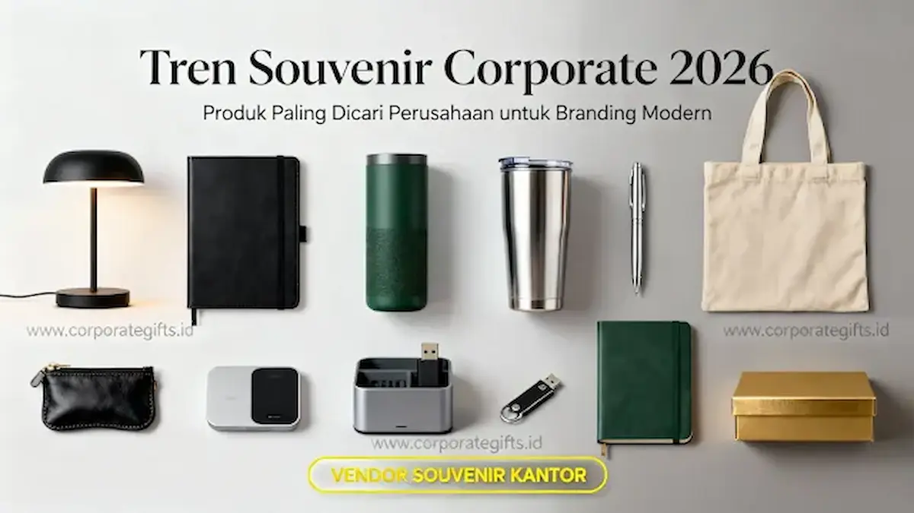

Corporate Gifts ID - Tren souvenir corporate 2026 didominasi oleh empat kategori utama: tech gift fungsional, produk eco-friendly, apparel minimalis, dan desk accessories yang mendukung gaya kerja hybrid. Perusahaan kini memilih souvenir secara strategis berdasarkan nilai guna harian dan kekuatan personal branding, bukan lagi sekadar tampilan fisik semata.
CorporateGifts.ID menghadirkan koleksi lengkap kategori-kategori ini dengan desain minimalis premium yang siap mendukung strategi branding korporat Anda sepanjang tahun 2026.
Poin Kunci Tren Souvenir Corporate 2026:
- Perangkat Teknologi Hybrid: Souvenir teknologi seperti wireless charger dan powerbank GaN menjadi kategori dengan permintaan tertinggi karena langsung mendukung produktivitas kerja hybrid.
- Standar Wajib Sustainability: Keberlanjutan lingkungan kini menjadi standar utama. Souvenir eco-friendly seperti tumbler daur ulang dan tote bag kanvas semakin diprioritaskan korporasi besar.
- Subtle & Minimalist Branding: Desain minimalis elegan dengan finishing matte resmi menggantikan logo berukuran besar yang mencolok sebagai standar branding modern.
- Segmentasi Penerima Terarah: Pemilihan souvenir kini disesuaikan secara spesifik berdasarkan kelompok audiens, mulai dari klien VIP eksekutif, tim internal karyawan, hingga peserta seminar massal.
- Fokus Retensi & ROI: Fungsi pemakaian harian menjadi tolok ukur utama keberhasilan promosi agar investasi pengadaan menghasilkan impresi brand yang berkelanjutan.
Kenapa Tren Souvenir Corporate 2026 Berubah Signifikan?
Perusahaan modern kini menuntut pengadaan souvenir yang benar-benar terpakai setiap hari dalam rutinitas penerimanya, bukan sekadar berakhir menjadi pajangan meja atau dibuang. Pergeseran perilaku ini secara kuat didorong oleh tiga pilar utama: adaptasi gaya kerja hybrid, ekspektasi publik terhadap prinsip sustainability, dan standar estetika visual korporat yang kian matang.
Gaya Kerja Hybrid Mengubah Kebutuhan Souvenir Kantor
Karyawan dan mitra bisnis membutuhkan perlengkapan yang tetap fungsional dan fleksibel, baik saat bekerja di kantor pusat maupun saat bekerja dari rumah (WFH) atau co-working space. Kebutuhan mobilitas adaptif ini mendorong lonjakan permintaan terhadap kategori merchandise teknologi dan aksesoris meja portabel.
Sustainability Menjadi Standar Wajib Perusahaan
Korporasi skala nasional dan multinasional kini berkewajiban menjaga citra hijau sebagai bagian dari regulasi Environmental, Social, and Governance (ESG) serta strategi reputasi brand jangka panjang. Souvenir kantor eco-friendly bukan lagi sekadar pelengkap kegiatan CSR, melainkan ekspektasi dasar dari klien, mitra strategis, serta talenta muda berbakat.
Evolusi Branding: Dari Logo Mencolok ke Subtle Minimalist
Dominasi logo perusahaan berukuran raksasa kini dinilai kurang elegan dan cenderung enggan dipakai oleh penerima di ruang publik. Perusahaan terdepan beralih ke desain bersih (clean look) dengan sentuhan akhir matte atau gravir laser presisi. Pendekatan subtle branding ini terbukti meningkatkan persepsi kemewahan serta frekuensi pemakaian produk dalam jangka panjang.

Rekomendasi ragam souvenir kantor fungsional dan ramah lingkungan yang paling diminati perusahaan sepanjang tahun 2026.
5 Kategori Souvenir Corporate Paling Dicari 2026
Berdasarkan analisis tren permintaan industri B2B, lima kategori berikut konsisten menjadi pilihan favorit korporasi berkat sinergi antara fungsi esensial dan nilai estetika yang tinggi:
1. Souvenir Teknologi (Tech-Based Corporate Gifts)
Kategori gadget mendominasi pesanan perusahaan teknologi, perbankan, dan startup digital karena secara langsung menyokong efisiensi kerja modern. Produk yang paling dicari meliputi:
- Wireless charger stand 3-in-1 fast charging
- Powerbank GaN 30W ultra-slim dengan logo print UV
- Smart notebook digital dengan stylus pen terintegrasi
- USB-C hub multiport multifungsi untuk laptop
- Bluetooth speaker mini berbalut material aluminium
- Smart LED desk lamp portabel
Kategori teknologi memiliki angka retensi pemakaian harian tertinggi, sehingga branding perusahaan Anda akan terus terpapar secara organik dan konsisten.
2. Produk Eco-Friendly Premium
Souvenir ramah lingkungan terbukti ampuh membangun reputasi brand yang bertanggung jawab dan berwawasan masa depan. Pilihan material hijau terpopuler tahun 2026 mencakup:
- Tumbler stainless steel daur ulang (food grade BPA free)
- Tote bag kanvas organik dan katun premium ramah lingkungan
- Pulpen berbahan bambu alami dengan grafir nama penerima
- Buku catatan bercover hardboard kertas daur ulang kraft
- Kotak kemasan eksklusif dari material biodegradable
3. Apparel Corporate Bergaya Minimalis
Pakaian korporat tetap memegang peranan krusial dalam memperkuat rasa kebersamaan (sense of belonging) di kalangan karyawan. Model kasual namun tetap formal yang paling diminati meliputi:
- Hoodie cotton fleece dengan bordir micro logo yang rapi
- Polo shirt premium pique cotton untuk seragam event
- Jaket bomber corporate berbahan windproof premium
- Topi baseball dengan patch karet atau bordir halus
4. Drinkware & Tumbler Eksklusif
Perlengkapan minum selalu menjadi primadona abadi di meja kantor karena sifatnya yang sangat personal dan digunakan berulang kali sepanjang hari. Pilihan drinkware favorit meliputi:
- Tumbler vacuum insulator matte finishing tahan panas dan dingin 12 jam
- Mug keramik premium bergaya Skandinavia minimalis
- Botol minum sport stainless steel ergonomis
- Travel thermo cup dengan pengunci anti-bocor
5. Desk Accessories Fungsional Penunjang Meja Kerja
Perlengkapan penataan meja kerja berevolusi mengikuti kebutuhan setup modern. Produk penunjang produktivitas yang banyak dipesan meliputi:
- Desk organizer 5-in-1 berbahan paduan kayu dan kulit PU
- Wireless desk mat besar berbahan kulit sintetis premium
- Kalender meja blok kayu artistik abadi
- Set sticky notes eksekutif dengan cover kulit
- Dudukan smartphone dan tablet aluminium lipat
Souvenir Apa yang Cocok untuk Setiap Segmen Penerima?
Menyesuaikan cinderamata dengan profil penerima adalah kunci efektivitas branding. Pendekatan gift untuk nasabah atau mitra VIP tentu sangat berbeda dengan kebutuhan event massal berskala ribuan peserta.
Tabel Rekomendasi Souvenir per Segmen Penerima
Berikut matriks perbandingan jenis produk dan tujuan strategisnya berdasarkan target audiens:
| Segmen Penerima | Rekomendasi Produk | Tujuan Branding Utama |
|---|---|---|
| Klien VIP & Eksekutif | Gift box premium eksklusif, wireless charger pad, powerbank GaN, smart notebook kulit, hoodie premium bordir | Membangun prestise kemitraan strategis, kesan eksklusif, serta loyalitas jangka panjang |
| Karyawan Internal | Apparel korporat, tumbler vacuum matte, desk organizer multifungsi, agenda kerja, lanyard ID card eksklusif | Meningkatkan rasa bangga, keterikatan tim (engagement), dan retensi talenta internal |
| Peserta Event & Seminar | Tote bag kanvas, notebook kraft eco-friendly, pulpen metal laser engraving, botol minum praktis | Memperluas jangkauan brand awareness secara masif dan efisien sesuai alokasi budget |
Bagaimana Cara Menentukan Souvenir Corporate yang Tepat untuk Perusahaan?
Merencanakan pengadaan barang promosi yang sukses harus didasari oleh pemahaman objektif bisnis, bukan sekadar mengikuti tren sesaat. Terapkan tiga langkah strategis berikut:
1. Petakan Tujuan Branding Secara Jelas
Tentukan apakah cinderamata ditujukan untuk customer retention (menjaga loyalitas mitra), employee onboarding (menyambut karyawan baru), atau brand awareness di ajang pameran bisnis. Tujuan ini yang akan menentukan spesifikasi teknis produk.
2. Sesuaikan Skema Anggaran dengan Kualitas Material
Pengadaan merchandise korporat terbagi dalam tiga tingkatan budget: ekonomis untuk mass giveaway, mid-tier untuk kebutuhan operasional standar, dan tier premium untuk jajaran pimpinan serta klien prioritas. Pastikan memilih material yang tahan lama agar reputasi institusi Anda tetap terjaga dengan baik.
3. Utamakan Manfaat Fungsional Harian
Souvenir yang indah namun tidak memiliki kegunaan praktis akan cepat terlupakan. Sebaliknya, souvenir yang fungsional akan menjadi media promosi berjalan yang terus memberikan nilai impresi positif setiap kali digunakan oleh penerima.
Daftar Rangkuman 10 Souvenir Corporate 2026 Terpopuler
Berdasarkan data pemesanan B2B di Corporate Gifts ID, berikut 10 produk cinderamata yang paling banyak dipesan perusahaan di tahun 2026:
- Tumbler Vacuum Stainless Steel Matte Finishing
- Dudukan Smartphone & Tablet Aluminium Lipat
- Wireless Charger Desk Pad Multifungsi
- Smart Notebook Digital dengan Stylus Pen
- Hoodie & Jacket Corporate Cotton Fleece Minimalis
- Pulpen Metal Eksekutif dengan Laser Engraving
- Powerbank GaN Ultra-Slim Fast Charging
- USB Multiport Type-C Hub Hubbing Station
- Desk Organizer 5-in-1 Material Kayu dan Kulit
- Corporate Gift Set Box VIP Eksklusif
Kesimpulan
Pemetaan tren souvenir corporate 2026 menegaskan bahwa entitas bisnis masa kini semakin cerdas dalam mengalokasikan anggaran promosi. Fokus utama tidak lagi tertumpu pada kuantitas murah, melainkan pada kualitas material, fungsionalitas kerja hybrid, tanggung jawab lingkungan, serta sentuhan desain minimalis yang elegan.
Dengan memilih produk souvenir yang tepat, perusahaan Anda tidak hanya memberikan hadiah berkesan, tetapi juga menanamkan citra profesional yang kuat dan berkelanjutan di benak setiap penerimanya.
Pertanyaan Seputar Tren Souvenir Corporate 2026 (FAQ)

Ditulis oleh: Arinda Zakia
Senior Corporate Gifting Specialist & Content StrategistArinda Zakia adalah spesialis pengadaan souvenir korporat dan kurasi merchandise premium di CorporateGifts.ID. Berpengalaman lebih dari 8 tahun dalam mendesain strategi hadiah korporat, hampers VIP, dan seminar kit untuk berbagai instansi terkemuka di Indonesia.
Lihat Profil Lengkap & Panduan Lainnya